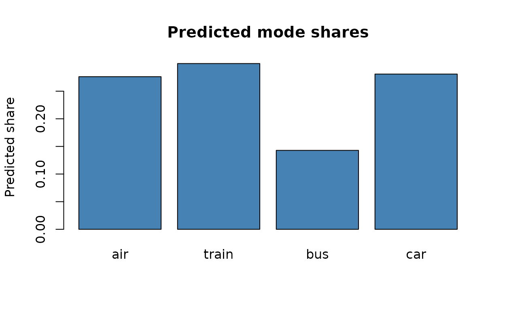

choicer estimates discrete-choice models for applied economics. The likelihoods, analytical gradients and Hessians are written in C++ with OpenMP, so estimation is fast and scales to specifications with hundreds of alternative-specific constants. Just as important, one consistent post-estimation interface takes you from a fitted model to the quantities you actually report: market shares, elasticities, diversion ratios, willingness-to-pay with standard errors, and the welfare effects of a policy counterfactual.
This vignette runs the whole workflow on a real data set in a few lines.
library(choicer)
set_num_threads(2) # be a good CRAN citizen; raise this on your own machineThe data
mode_choice is the classic Greene & Hensher
intercity travel-mode data: 210 travellers, each choosing among
air, train, bus and car. It ships with the package in
choicer’s long layout — one row per traveller and alternative.
data(mode_choice)
head(mode_choice, 4)
#> id mode choice wait travel vcost gcost income size
#> 1 1 air 0 69 100 59 70 35 1
#> 2 1 train 0 34 372 31 71 35 1
#> 3 1 bus 0 35 417 25 70 35 1
#> 4 1 car 1 0 180 10 30 35 1wait (terminal waiting time) and travel
(in-vehicle time) are in minutes; vcost is the travel cost.
These vary across modes within a traveller, which is exactly what a
choice model needs.
Fit a multinomial logit
Point at the identifier, alternative and choice columns, list the covariates, and fit. Alternative-specific constants are included by default.
fit <- run_mnlogit(
data = mode_choice,
id_col = "id",
alt_col = "mode",
choice_col = "choice",
covariate_cols = c("wait", "travel", "vcost")
)
#> Optimization run time 0h:0m:0.01s
summary(fit)
#> Multinomial Logit (MNL) model
#>
#> Parameter Estimate Std.Error z-value Pr(>|z|)
#> wait -0.096887 0.010342 -9.3683 0.00e+00 ***
#> travel -0.003995 0.000849 -4.7043 2.55e-06 ***
#> vcost -0.013912 0.006651 -2.0916 3.65e-02 *
#> ASC_train -0.786669 0.602607 -1.3054 1.92e-01
#> ASC_bus -1.433640 0.680713 -2.1061 3.52e-02 *
#> ASC_car -4.739865 0.867532 -5.4636 4.67e-08 ***
#> ---
#> Signif. codes: '***' 0.001 '**' 0.01 '*' 0.05
#>
#> Log-likelihood: -192.889
#> AIC: 397.777 | BIC: 417.86
#> McFadden R2: 0.337 (adj: 0.317) | Hit rate: 0.738
#> N: 210 | Parameters: 6
#> Optimization time: 0.01 s
#> Convergence: 3 ( NLOPT_FTOL_REACHED: Optimization stopped because ftol_rel or ftol_abs (above) was reached. )Estimation takes a fraction of a second. Travellers dislike waiting
time, in-vehicle time and cost — all three coefficients are negative —
and the summary() footer reports McFadden’s R² and the
in-sample hit rate alongside the usual fit statistics.
Predicted shares
shares <- drop(predict(fit, type = "shares"))
names(shares) <- as.character(fit$alt_mapping[[2]])
round(shares, 3)
#> air train bus car
#> 0.276 0.300 0.143 0.281
barplot(shares, col = "steelblue", ylab = "Predicted share",
main = "Predicted mode shares")
Elasticities and diversion
How does demand respond to cost, and where does it go? The same fitted object answers both, with no extra bookkeeping.
elasticities(fit, elast_var = "vcost")
#> air train bus car
#> air -0.8309 0.1679 0.06729 0.06912
#> train 0.3551 -0.5463 0.06729 0.06912
#> bus 0.3551 0.1679 -0.39815 0.06912
#> car 0.3551 0.1679 0.06729 -0.22296
diversion_ratios(fit)
#> air train bus car
#> air 0.0000 0.2776 0.2513 0.3860
#> train 0.3080 0.0000 0.3556 0.4144
#> bus 0.1719 0.2192 0.0000 0.1996
#> car 0.5201 0.5032 0.3931 0.0000The own-cost elasticities sit on the diagonal; off-diagonal entries are the cross-elasticities. In this small example every traveller faces the same set of modes, so diversion is close to share-proportional — the textbook independence-of-irrelevant-alternatives (IIA) pattern of logit. That proportionality is an individual-level property, though, not a law of the model in aggregate: once covariates vary across choice situations the averaged diversion patterns move away from it (see the MNL vignette). Where the remaining limitations bite — substitution driven by unobserved tastes, within-group correlation, or individual-level counterfactuals — the nested logit, mixed logit, and multinomial probit change the source of substitution flexibility in different ways. Those mechanisms, and their identification costs, are summarized in Choosing among logit models below.
Willingness to pay
With vcost playing the role of price, wtp()
returns the marginal value of each attribute in money units, with
delta-method standard errors.
wtp(fit, price_var = "vcost")
#> Willingness to pay (WTP), price variable: 'vcost' (95% CI)
#> Estimate Std_Error z_value CI_lower CI_upper
#> wait -6.9645 3.4085 -2.043 -13.6450 -0.283902
#> travel -0.2871 0.1436 -2.000 -0.5685 -0.005757These are the travellers’ implied value of time: how much they would pay to shave a minute of in-vehicle or terminal time.
A policy counterfactual
Suppose a subsidy cuts the cost of train travel by 25%. Perturb the data and predict — no refitting required.
mc_cf <- mode_choice
mc_cf$vcost[mc_cf$mode == "train"] <- mc_cf$vcost[mc_cf$mode == "train"] * 0.75
shares_cf <- drop(predict(fit, type = "shares", newdata = mc_cf))
names(shares_cf) <- names(shares)
rbind(baseline = shares, counterfactual = shares_cf) |> round(3)
#> air train bus car
#> baseline 0.276 0.300 0.143 0.281
#> counterfactual 0.269 0.324 0.138 0.270Train’s share rises, drawing travellers away from the other modes. We can put a money value on the change in welfare with the expected consumer surplus:
cs0 <- consumer_surplus(fit, price_var = "vcost")
cs1 <- consumer_surplus(fit, price_var = "vcost", newdata = mc_cf)
cs1$mean_cs - cs0$mean_cs # change in mean consumer surplus
#> [1] 3.2The cheaper train fare raises expected consumer surplus, as it
should. The number is a model-based demand calculation, not a causal
estimate by itself: it inherits the maintained utility specification,
the price coefficient, and the assumption that the counterfactual
changes only the variables you changed in newdata.
One interface, every model
Everything above — predict(),
elasticities(), diversion_ratios(),
wtp(), consumer_surplus(), plus
blp() for share inversion — works identically on
mixed logit (run_mxlogit()) and
nested logit (run_nestlogit()) fits, and
choicer also offers a Bayesian multinomial probit
sampler (run_mnprobit()). Learn each model in its own
vignette:
- Multinomial logit — the workhorse, and a parameter-recovery check
- Mixed logit — random coefficients and preference heterogeneity
- Nested logit — correlated alternatives and relaxed IIA
- Bayesian multinomial probit — flexible error covariance via MCMC
Choosing among logit models
It is tempting to choose a model by asking “does it satisfy IIA?” — but that is the wrong first question. IIA can be defined for any choice-probability system, including market-wide shares. In microeconometric MNL, however, the primitive restriction is on individual choice probabilities conditional on covariates: a single decision-maker’s odds between two alternatives ignore all others. Aggregate shares need not satisfy the analogous market-level IIA property after averaging over heterogeneous consumers or choice situations. The mixed logit, for example, is built entirely from IIA-obeying logit kernels; its non-IIA aggregate behavior comes from averaging those kernels over heterogeneity.
The mature econometric question is: what variation identifies the substitution pattern needed for the object I want to report? A demand model should be parsimonious and tractable, should match the substitution patterns disciplined by the data, and — hardest of all — should deliver credible substitution in counterfactuals you do not observe (a new product, a merger, a removed alternative). In a counterfactual there is no data to discipline who substitutes to what; the model’s structure does all the work, which is exactly why the choice of structure matters.
The useful way to compare the models is to ask where each one spends its assumptions to generate flexible substitution:
| Model | Source of flexible substitution | Cost / where it can bite |
|---|---|---|
| Multinomial logit | Observed heterogeneity in covariates | Maximally disciplined by data, but rigid: cannot represent substitution from unobserved taste correlation, and stays share-proportional for any individual-level counterfactual. |
| Nested logit | Within-nest correlation in unobservables (one λ per nest) | Cheap, closed-form, globally well-behaved — but you must defend the nesting tree, and the model only allows correlation within the nests you draw. |
| Mixed logit | A distribution of tastes (unobserved heterogeneity) | Very flexible, but the flexibility is only useful where is identified — typically through panel choices, variation in choice sets and attributes across markets (BLP), or designed experiments. |
| Multinomial probit | A covariance matrix for utility-difference errors | Flexible error correlation, but many covariance parameters, scale normalization, MCMC diagnostics, and substantial data demands. |
A few principles fall out of this table:
There is no free lunch. Every relaxation of IIA buys flexibility by spending an assumption somewhere — a nesting tree, a taste distribution, an error covariance. You either pay with data (and accept the MNL’s rigidity) or pay with structure (and own that structure’s failure modes).
Start from the estimand. Own-price elasticities, diversion ratios, WTP, logsum welfare, merger substitution and entry effects put different burdens on the model. A specification that fits observed shares can still deliver poor counterfactual diversion if the relevant substitution margin is supplied by functional form rather than empirical variation.
Match the model to your variation. The mixed logit’s random coefficients and the probit’s covariance matrix are only as good as the data that identify them. With a thin cross-section — one choice per person, a fixed menu — prefer the MNL or a substantively motivated nested logit; reserve richer heterogeneity for settings with repeated choices, rich variation in choice sets and attributes across markets, or experimental designs.
Let the counterfactual drive the choice. If your question hinges on who substitutes to what (merger simulation, a differentiated new entrant), the MNL’s proportional substitution is a liability and the extra structure earns its keep. If you mainly need own-price responses and clean welfare numbers on the observed menu, the MNL is often the honest, robust baseline. The dangerous model is not always the simple one; it is the flexible one whose flexibility is supplied by assumptions the data cannot discipline.
Each model’s own vignette develops these tradeoffs in detail: MNL, nested logit, mixed logit.
How choicer compares
Several excellent R packages estimate discrete-choice models — among them mlogit, logitr, gmnl, apollo and mixl. choicer’s focus is a fast C++ core with analytical gradients and Hessians, and a single, consistent post-estimation toolkit aimed at the demand and welfare quantities applied economists report.